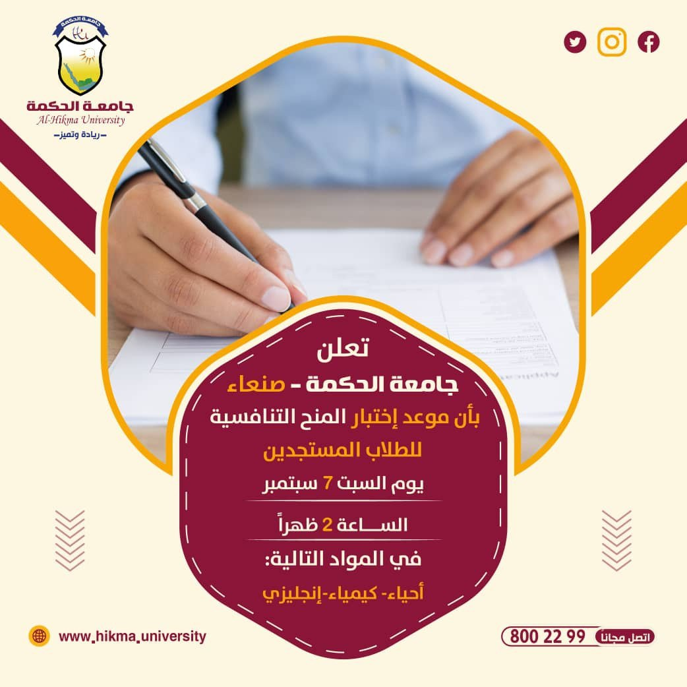
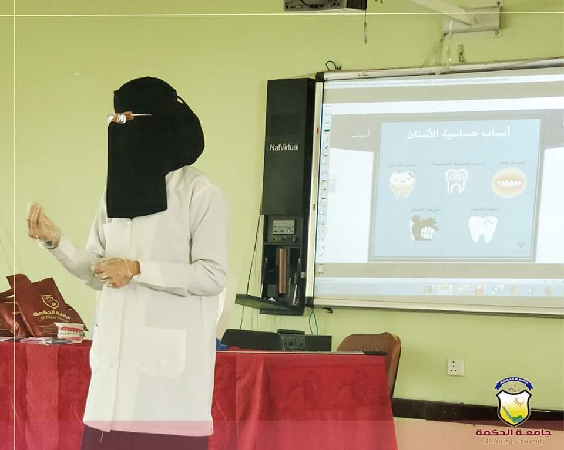
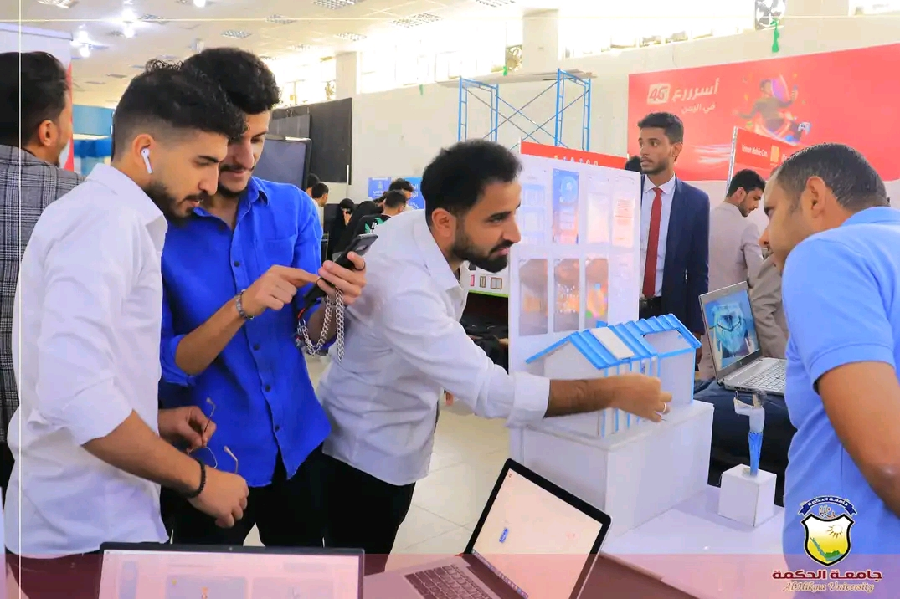
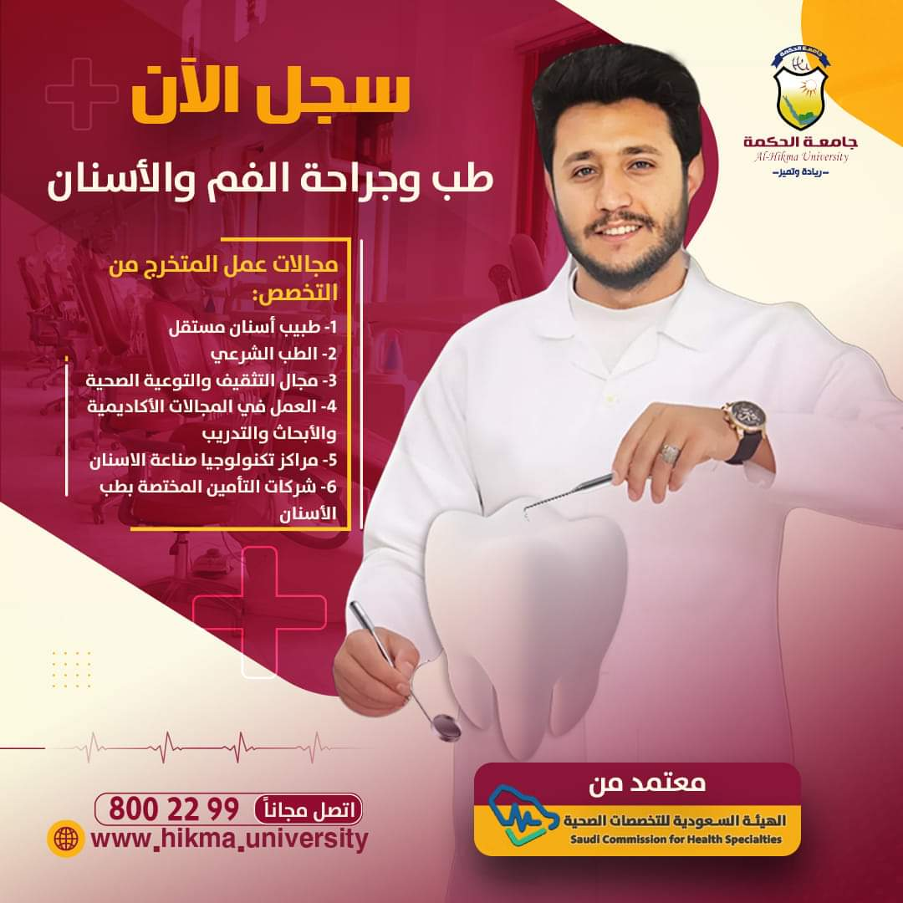
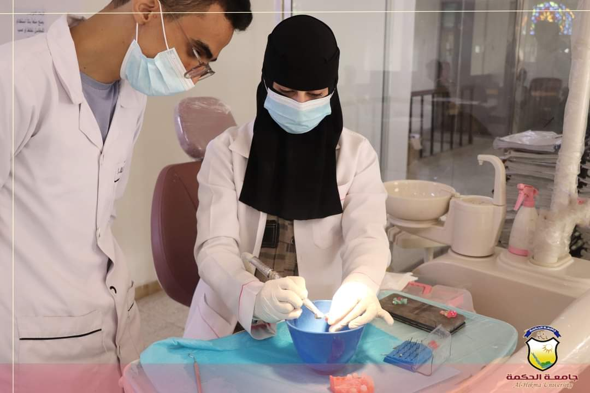
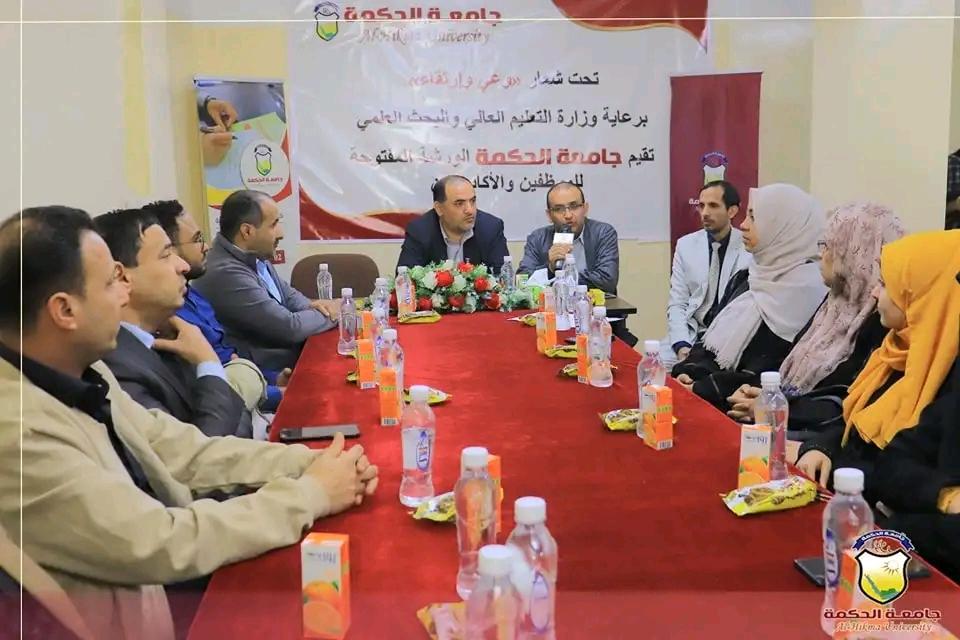
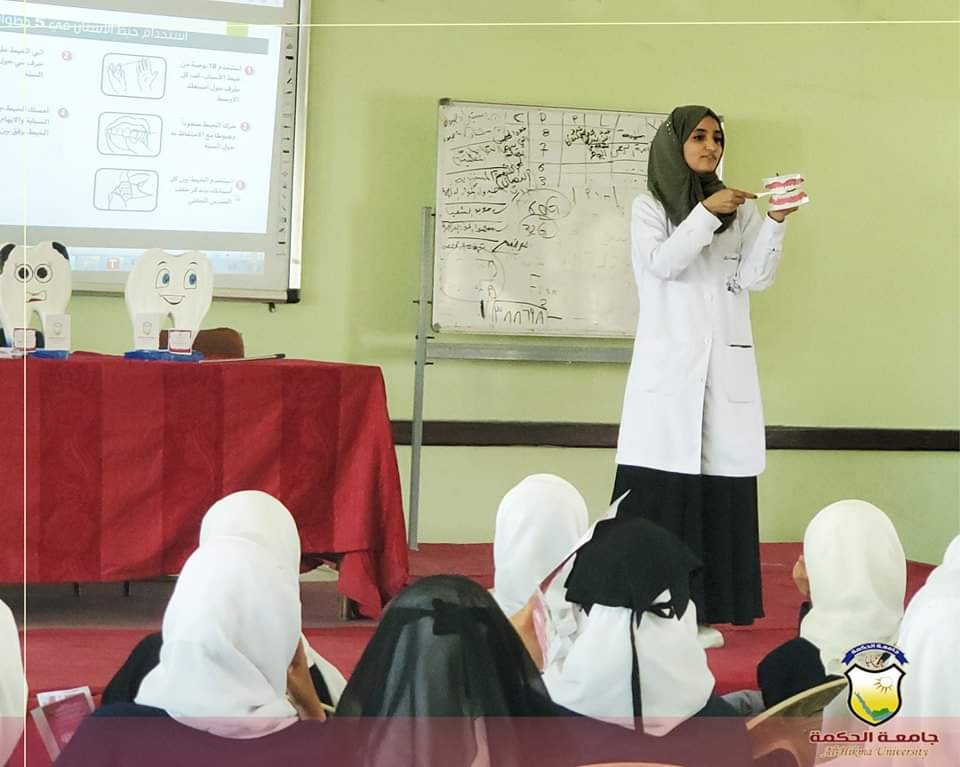
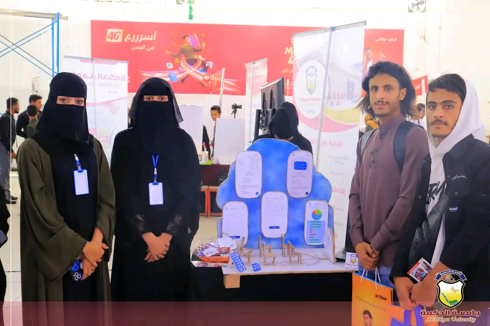

عن الجامعة
فيديوهات عن الجامعة








نبذة عن الجامعة
جامعة الحكمة
مؤسسة تعليمية خاصة مرخصة رسمياً من وزارة التعليم العالي والبحث العلمي في الجمهورية اليمنية برقم 542 وتاريخ 26/8/2008 م ، بدأ نشاط مؤسسة الحكمة التعليمية في عام 2004م بإسم معهد الجامعة للتخصصات الطبية ثم أُضيف إسم كلية الحكمة في عام 2007م للتخصصات
التقنية والإدارية بترخيص من وزارة الصحة العامة والسكان ووزارة التعليم الفني والتدريب المهني على التوالي، وسرعان ما نالت هذه المؤسسة ثقة الجهات الرسمية فتم إفتتاحها رسمياً من قِبل دولة رئيس الوزراء د.على محمد مجور، ومن ثم موافقة وزارة التعليم
العالي بتأسيس أول جامعة أهلية مقرّها مدينة ذمار وفروعها في مدينتي صنعاء وتعز.
كما تقدم الجامعة منح دراسية مجانية تنافسية (كاملة و جزئية) معتمدة منذ العام 2010م في جميع فروعها ضمن خدماتها المجتمعية ودعماً لطلابها الراغبين في الدراسة في جميع التخصصات
نظام الدراسة:
- يبدأ العام الجامعي في شهر سبتمبر من كل عام، وتستمر الدراسة (32) أسبوعاً في العام الجامعي خلال الفصلين الدراسيين الأول والثاني، حيث تكون مدة الفصل الدراسي (الأول أو الثاني) (16) ستة عشر أسبوعاً بما في ذلك الاختبارات النصفية والنهائية، وتكون مدة
الفصل الصيفي (8) أسابيع بواقع محاضرتين خلال كل أسبوع بما في ذلك الاختبارات. - نظام الدراسة في جميع كليات وفروع الجامعة، يقوم على أساس الإنتظام، ويحرم الطالب من دخول الإختبار النهائي إذا كانت نسبة حضوره أقل من 75% من المحاضرات النظرية والدروس
العملية لكل مقرر بحسب الخطة الدراسية، ويعتبر الطالب الذي حرم من دخول الإختبار النهائي بسبب الغياب راسباً في المقرر.